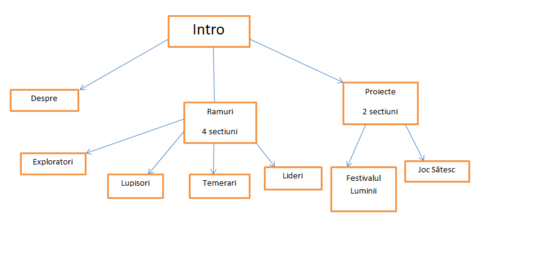

Descriere.Scop.Surse.
După cum am menționat și în prima pagină a proiectului, sunt cercetaș și fac parte din această organizație de 10 ani.
De prima dată când am aflat că trebuie să fac o pagină web m-am gândit la asta. Scopul site-ului este de a-i informa pe vizitatori despre cercetășie,
având în vedere că nu sunt foarte multe informații mai mult crearea unei idei de ansamblu. Consider că se site-ul se adresează:
- părinților
- copiilor
- adolescenților
Din prima pagină a site-ului poți accesa și celelalte pagini prin click pe cele 3 imagini. Am ales ca site-ul să fie secționat în 3 porțiuni, o pagină fiind cu informații generale,
una despre ramurile de vârstă, adică cum sunt împărțiți copii în funcție de vârstă și ultima pagină conține două proiecte pentru ca vizitatorii să își facă o idee despre
activitățile pe care le desfășoară cercetașii.
Schemă:

Surse:
Pozele au fost luate din arhiva centrului.